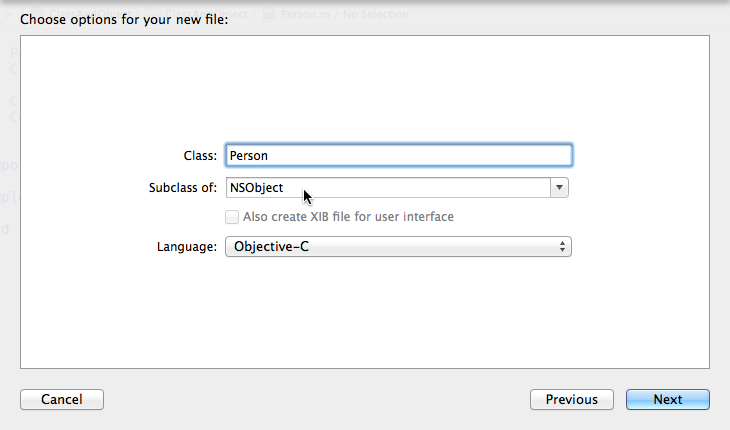

iOS开发系列--Objective-C之类和对象
概述
前面已经简单介绍过ObjC的基础知识，让大家对ObjC有个大致的印象，今天将重点解释ObjC面向对象的特性。ObjC相对于C语言多了面向对象特性，但是ObjC又没有其他面向对象语言那么多语法特性，ObjC本身对面向对象进行了精简。当然这并不代表今天的内容就会少，今天的内容还是相当多的：
类定义
在C#、Java等其他高级语言中定义一个类是相当简单点的，直接一个关键字class加一对大括号基本就完成了，但是在ObjC中类的定义相对变化比较大。现在假设需要定义一个Person类
在Xcode中添加文件，选择Cocoa Class 或者Cocoa Touch Class
{kind=link}
输入类名Person，并选择父类为NSObject
 默认生成如下两个文件
{kind=link}
Person.h
// // Person.h // ClassAndObject // // Created by Kenshin Cui on 14-2-1. // Copyright (c) 2014年 Kenshin Cui. All rights reserved. // #import <Foundation/Foundation.h> @interface Person : NSObject @end
Person.m
// // Person.m // ClassAndObject // // Created by Kenshin Cui on 14-2-1. // Copyright (c) 2014年 Kenshin Cui. All rights reserved. // #import "Person.h" @implementation Person @end
在ObjC中定义一个类需要两个文件.h和.m：
- .h文件：放类的声明，包括成员变量、属性和方法声明（事实上.h文件不参与编译过程）；关键字@interface声明一个类，同时它必须以@end结束，在这两个关键字中间声明相关成员；在声明Person类的同时可以看到它继承于NSObject，这是ObjC的基类，所有的类最终都继承于这个类（但是需要注意ObjC中的基类或者根类并不只有一个，例如NSProxy也是ObjC的基类），由于这个类在Foundation框架中定义，所以导入了<Foundation/Foundaton.h>（这么描述的意思是导入Foundation框架中的Foundation.h声明文件）；
- .m文件：放属性、方法的具体实现；关键字@implementation用于实现某个类，同时必须以@end结尾，在这两个关键字中间实现具体的属性、方法；由于.m中使用了Person类，所以需要导入声明文件“Person.h”；
成员变量
假设在Person类中包含人员姓名（name）、年龄（age）、民族（nation）、身高（height）四个成员变量，同时姓名和年龄两个成员变量是私有的，身高是公开的，民族则限制为只有子类可以访问。
// // Person.h // ClassAndObject // // Created by Kenshin Cui on 14-2-1. // Copyright (c) 2014年 Kenshin Cui. All rights reserved. // #import <Foundation/Foundation.h>//由于使用了NSObject，所以导入此头文件 //NSObject是基类，Person实现了NSObject @interface Person : NSObject{ /*成员变量必须包含在大括号中 *注意成员变量不声明任何关键字的话是默认可访问性@Protected *注意在ObjC中不管是自定义的类还是系统类对象都必须是一个指针，例如下面的_name */ @private NSString *_name;//在ObjC中推荐成员变量名以_开头 int _age; @protected NSString *_nation; @public float height; } @end
成员变量定义在.h文件中，同时必须定义在类后面的{}内。成员的可访问性通过下面三个关键字声明：
- @private 私有成员，只有当前类可以访问；
- @protected 受保护成员，只有当前类或子类可以访问（如果没有添加任何修饰则默认为@protected）；
- @public 公共成员，所有类均可访问；
在ObjC中可访问性修饰符除了这三种，还有一个@package不太常用，它类似于C#中的internal在框架内是公共的，但是框架外是私有的（也就是只能在一个框架内可以访问）。那么既然身高是公共的，外界怎么访问呢？
// // main.m // ClassAndObject // // Created by Kenshin Cui on 14-2-1. // Copyright (c) 2014年 Kenshin Cui. All rights reserved. // #import <Foundation/Foundation.h> #import "Person.h" int main(int argc, const char * argv[]) { @autoreleasepool { Person *p=[Person alloc]; p=[p init]; //上面两句代码可以直接写成：Person *p=[[Person alloc] init]; //还可以写成：Person *p=[Person new]; p->height=1.72; NSLog(@"height=%.2f",p->height);//结果：height=1.72 } return 0; }
这里需要注意几点：
- ObjC中所有的对象类型的变量都必须加上“*”,在ObjC中对象其实就是一个指针（例如之前看到的NSString也是如此，但是基本类型不用加”*”）；
- ObjC中使用[]进行方法调用，在ObjC中方法调用的本质就是给这个对象或类发送一个消息；
- 在ObjC中类的实例化需要两个步骤：分配内存、初始化；
- 类的初始化调用了父类的init方法，如果使用默认初始化方法进行初始化（没有参数），内存分配和初始化可以简写成[Person new]；
- 公共成员的调用使用“->”操作符；
方法和属性
既然有了上面成员变量，假设现在需要一个对象方法去设置用户姓名，还需一个类方法打印一些信息。
在ObjC中方法分为静态方法和动态方法两种，动态方法就是对象的方法，静态方法就是类方法，这一点跟其他高级语言没有区别。在ObjC中使用“-”定义动态方法，使用“+”定义静态方法。如果一个方法在.h中有声明则该方法是公共方法，如果没有在.h中声明直接在.m中定义则该方法是私有方法，外部无法访问。
person.h
// // Person.h // ClassAndObject // // Created by Kenshin Cui on 14-2-1. // Copyright (c) 2014年 Kenshin Cui. All rights reserved. // #import <Foundation/Foundation.h>//由于使用了NSObject，所以导入此头文件 //NSObject是基类，Person实现了NSObject @interface Person : NSObject{ /*成员变量必须包含在大括号中 *注意成员变量不声明任何关键字的话是@Protected，其他还有@Private和@Public *注意在ObjC中不管是自定义的类还是系统类对象都必须是一个指针，例如下面的_name */ @private NSString *_name;//在ObjC中推荐变量名以_开头 int _age; @protected NSString *_nation; @public float height; } //声明一个动态方法，没有返回值 -(void)setName:(NSString *)name; //声明一个静态方法，没有返回值 +(void)showMessage:(NSString *)info; @end
Person.m
// // Person.m // ClassAndObject // // Created by Kenshin Cui on 14-2-1. // Copyright (c) 2014年 Kenshin Cui. All rights reserved. // #import "Person.h" @implementation Person //实现一个动态方法 -(void)setName:(NSString *)name{ _name=name; } //实现一个静态方法 +(void)showMessage:(NSString *)info{ NSLog(@"%@",info); } @end
在ObjC中方法的参数类型、返回值类型需要放到()中，而且参数前必须使用冒号，并且此时冒号是方法名的一部分。当然，上面的方法只有一个参数，假设现在有一个方法可以同时设置年龄和籍贯，可以写成如下形式：
-(void)setAge:(int)age andHeight:(NSString *)nation{ _age=age; _nation=nation; }
其中andHeight可以省略不写，当然为了保证方法名更有意义建议书写时加上。
大家都知道在其他语言中还会经常提到属性的概念，通常一个成员的访问不会直接通过成员变量而是通过属性暴漏给外界。在ObjC中属性的实现方式其实类似于Java中属性定义，通过对应的setter和getter方法进行实现。没错，上面setName其实就是属性的setter方法，但是在ObjC中gettter方法通常使用变量名，而不加“get”。下面就看一下年龄属性的实现
Person.h
// // Person.h // ClassAndObject // // Created by Kenshin Cui on 14-2-1. // Copyright (c) 2014年 Kenshin Cui. All rights reserved. // #import <Foundation/Foundation.h>//由于使用了NSObject，所以导入此头文件 //NSObject是基类，Person实现了NSObject @interface Person : NSObject{ /*成员变量必须包含在大括号中 *注意成员变量不声明任何关键字的话是@Protected，其他还有@Private和@Public *注意在ObjC中不管是自定义的类还是系统类对象都必须是一个指针，例如下面的_name */ @private NSString *_name;//在ObjC中推荐变量名以_开头 int _age; @protected NSString *_nation; @public float height; } //声明一个动态方法，没有返回值 -(void)setName:(NSString *)name; //声明一个静态方法，没有返回值 +(void)showMessage:(NSString *)info; //声明age的setter、getter方法 -(int)age; -(void)setAge:(int)age; @end
Person.m
// // Person.m // ClassAndObject // // Created by Kenshin Cui on 14-2-1. // Copyright (c) 2014年 Kenshin Cui. All rights reserved. // #import "Person.h" @implementation Person //实现一个动态方法 -(void)setName:(NSString *)name{ _name=name; } //私有方法 -(void)setAge:(int)age andHeight:(NSString *)nation{ _age=age; _nation=nation; } //实现一个静态方法 +(void)showMessage:(NSString *)info{ NSLog(@"%@",info); } //实现age的setter、getter方法 -(int)age{ return _age; } -(void)setAge:(int)age{ _age=age; } @en
接下来看一下具体的调用
// // main.m // ClassAndObject // // Created by Kenshin Cui on 14-2-1. // Copyright (c) 2014年 Kenshin Cui. All rights reserved. // #import <Foundation/Foundation.h> #import "Person.h" int main(int argc, const char * argv[]) { @autoreleasepool { Person *p=[Person alloc]; p=[p init]; //上面两句代码可以直接写成：Person *p=[[Person alloc] init]; //还可以写成：Person *p=[Person new]; //成员变量调用 p->height=1.72; NSLog(@"height=%.2f",p->height);//结果：height=1.72 //方法调用 [p setName:@"Kenshin"]; //属性调用 p.age=28; //等价于：[p setAge:28]; int age=p.age;//等价于：age=[p age]; NSLog(@"age=%i",age); //结果：age=28 } return 0; }
关于方法的调用在这里不着重介绍了，我们可以看到p.age的调用方式，是不是类似于C#、Java中属性的调用方式，这就是ObjC中的点语法。其实这种方式调用的本质还是调用对应的方法进行处理，这么做的目的只是为了开发人员书写方便而已（这就是语法糖的目的）。至于p.age是调用get方法还是调用set方法完全取决于当前操作是赋值操作还是读取操作。
通过上面的程序我们可以看到如果要定义一个属性，首先需要在.h中声明其次还要在.m中实现，而定义属性的代码基本都是类似的，那么有没有简单的方法呢，其实在ObjC中可以通过声明@property，同时通过@synthesize自动生成getter、setter方法（在新版本中甚至甚至都不用通过@synthesize只声明就可以使用）。我们通过一段代码来说明这个问题（为了方便大家查看代码，在下面的代码中暂时去掉前面定义的成员变量、属性等）
Person.h
// // Person.h // ClassAndObject // // Created by Kenshin Cui on 14-2-1. // Copyright (c) 2014年 Kenshin Cui. All rights reserved. // #import <Foundation/Foundation.h> @interface Person : NSObject{ @public NSString *birthday; NSString *_position; NSString *_degress; } @property NSString *birthday; @property NSString *position; @property NSString *degress; @property NSString *education; @property float weight; -(void)printInfo; @end
Person.m
// // Person.m // ClassAndObject // // Created by Kenshin Cui on 14-2-1. // Copyright (c) 2014年 Kenshin Cui. All rights reserved. // #import "Person.h" @implementation Person @synthesize birthday; @synthesize position; @synthesize degress=_degress; @synthesize education; -(void)printInfo{ NSLog(@"_weight=%.2f",_weight); NSLog(@"education=%@",education); NSLog(@"_degress=%@",_degress); } @end
main.m
// // main.m // ClassAndObject // // int main(int argc, const char * argv[]) { // Copyright (c) 2014年 Kenshin Cui. All rights reserved. // #import <Foundation/Foundation.h> #import "Person.h" int main(int argc, const char * argv[]) { Person *p=[[Person alloc]init]; p->birthday=@"1987-08-20"; p.birthday=@"1986-08-08"; p->_position=@"developer"; p.position=@"architect"; p.degress=@"undergraduate"; p.education=@"university"; p.weight=60.0; NSLog(@"p->birthday=%@,p.birthday=%@",p->birthday,p.birthday); //结果:p->birthday=1986-08-08,p.birthday=1986-08-08 NSLog(@"p->_position=%@,p.position=%@",p->_position,p.position); //结果：p->_position=developer,p.position=architect NSLog(@"p.weight=%.2f",p.weight); //结果：p.weight=60.00 [p printInfo]; /*结果： _weight=60.00 education=university _degress=undergraduate*/ return 0; }
上面的代码虽然简单，但是几乎涵盖所有属性生成规则。通过上面的代码我们可以看到最简单的方法就是直接通过@property就可以声明一个变量（例如weight属性），不需要进行实现即可直接使用；还可以使用@property声明再用@synthesize去实现（例如上面的birthday属性），不仅如此在实现的时候还可以指定实现此属性时使用哪个成员变量（例如degress属性）。在上面的代码中我们还看到weight属性自动生成了一个_weight成员变量，而education生成了一个education属性，那么它们生成的规则是什么呢，这里总结如下：
- 如果只声明一个属性a，不使用@synthesize实现：编译器会使用_a作为属性的成员变量（如果没有定义成员变量_a则会自动生成一个私有的成员变量_a；如果已经定义了成员变量_a则使用自定义的成员变量_a。注意：如果此时定义的成员变量不是_a而是a则此时会自动生成一个成员变量_a，它跟自定义成员变量a没有任何关系）；
- 如果声明了一个属性a，使用@synthesize a进行实现，但是实现过程中没有指定使用的成员变量（例如上面birthday）：则此时编译器会使用a作为属性的成员变量（如果定义了成员变量a，则使用自定义成员变量；如果此时没有定义则会自动生成一个私有的成员变量a，注意如果此时定义的是_a则它跟生成的a成员变量没有任何关系）；
- 如果声明了一个属性a，使用@synthesize a=_a进行实现，这个过程已经指定了使用的成员变量：此时会使用指定的成员变量作为属性变量；
有了上面的总结，相信理解上面的代码并不难，通常在实际开发过程中我们要么直接在@property中声明不使用@synthesize；要么使用过程中指定具体的成员变量。
此外再次强调一下，通过上面的方式定义变量的本质还是生成对应的gettter、setter方法（只是这个步骤编译器帮你完成了），如果通过@property定义了属性，同时在.m中又自定义实现了对应方法，则会使用自定义方法。
self关键字
在C#、Java中都有一个关键字this用于表示当前对象，其实在ObjC中也有一个类似的关键字self，只是self不仅可以表示当前对象还可以表示类本身，也就是说它既可以用在静态方法中又可以用在动态方法中。
Perosn.h
// // Person.h // ClassAndObject // // Created by Kenshin Cui on 14-2-1. // Copyright (c) 2014年 Kenshin Cui. All rights reserved. // #import <Foundation/Foundation.h> @interface Person : NSObject @property NSString *name; @property int age; -(void)setName:(NSString *)name andAge:(int)age; +(void)showMessage; @end
Person.m
// // Person.m // ClassAndObject // // Created by Kenshin Cui on 14-2-1. // Copyright (c) 2014年 Kenshin Cui. All rights reserved. // #import "Person.h" @implementation Person -(void)setName:(NSString *)name andAge:(int)age{ // _name=name; // _age=age; self.name=name; self.age=age; } +(void)printInfo{ NSLog(@"Hello,World!"); } +(void)showMessage{ [self printInfo]; } @end
main.m
// // main.m // ClassAndObject // // Created by Kenshin Cui on 14-2-1. // Copyright (c) 2014年 Kenshin Cui. All rights reserved. // #import <Foundation/Foundation.h> #import "Person.h" int main(int argc, const char * argv[]) { Person *p=[[Person alloc]init]; [p setName:@"Kenshin" andAge:28]; [Person showMessage]; return 0; }
在上面代码中可以看到setName: andAge:方法是一个动态方法，此时self就代表调用对象；而在showMessage方法中self调用了类的静态方法printInfo，此时self代表调用的类；因此可以总结出在ObjC中self就代表当前方法的调用者。
扩展
先看一段代码
Person.h
// // Person.h // ClassAndObject // // Created by Kenshin Cui on 14-2-1. // Copyright (c) 2014年 Kenshin Cui. All rights reserved. // #import <Foundation/Foundation.h> @interface Person : NSObject @property NSString *name; @property int age; @end
Person.m
// // Person.m // ClassAndObject // // Created by Kenshin Cui on 14-2-1. // Copyright (c) 2014年 Kenshin Cui. All rights reserved. // #import "Person.h" @implementation Person -(void)setName:(NSString *)name{ self.name=name; } @end
main.m
// // main.m // ClassAndObject // // Created by Kenshin Cui on 14-2-1. // Copyright (c) 2014年 Kenshin Cui. All rights reserved. // #import <Foundation/Foundation.h> #import "Person.h" int main(int argc, const char * argv[]) { Person *p=[[Person alloc]init]; p.name=@"Kenshin"; return 0; }
如果运行上面的代码将会发生死循环，原因很简单，self.name=name本身就会调用Person的setName方法，如此反复就会造成循环操作，所有一般如果需要重写setter方法，可以直接写成_name=name,由此我们也可以看到为什么之前即使没有使用@property生成对应的属性方法，在定义成员变量时也都加上了下划线（这是一好的编码习惯）。
构造方法
在前面的代码中我们已经看到如果要初始化一个类需要调用init方法，那么下面看一下如何自定义构造方法
Person.h
// // Person.h // ClassAndObject // // Created by Kenshin Cui on 14-2-1. // Copyright (c) 2014年 Kenshin Cui. All rights reserved. // #import <Foundation/Foundation.h> @interface Person : NSObject @property NSString *name; @property int age; -(id)initWithName:(NSString *)name andAge:(int )age; @end
Person.m
// // Person.m // ClassAndObject // // Created by Kenshin Cui on 14-2-1. // Copyright (c) 2014年 Kenshin Cui. All rights reserved. // #import "Person.h" @implementation Person //自定义构造方法 -(id)initWithName:(NSString *)name andAge:(int)age{ if(self=[super init]){ //super代表父类 self.name=name; self.age=age; } return self; } @end
main.m
// // main.m // ClassAndObject // // Created by Kenshin Cui on 14-2-1. // Copyright (c) 2014年 Kenshin Cui. All rights reserved. // #import <Foundation/Foundation.h> #import "Person.h" int main(int argc, const char * argv[]) { Person *p=[[Person alloc]initWithName:@"Kenshin" andAge:28]; NSLog(@"name=%@,age=%i",p.name,p.age); //结果：name=Kenshin,age=28 return 0; }
在ObjC中super代表父类，通过调用父类的方法给当前对象赋值，然后判断这个对象是否为nil，如果不为空则依次给name、age属性赋值。
扩展
通过自定义构造方法固然可以简化代码，但是在使用时还要手动申请内存，在ObjC中一般我们通过定义一个静态方法来解决这个问题
Person.h
// // Person.h // ClassAndObject // // Created by Kenshin Cui on 14-2-1. // Copyright (c) 2014年 Kenshin Cui. All rights reserved. // #import <Foundation/Foundation.h> @interface Person : NSObject @property NSString *name; @property int age; -(id)initWithName:(NSString *)name andAge:(int )age; +(id)personWithName:(NSString *)name andAge:(int )age; @end
Person.m
// // Person.m // ClassAndObject // // Created by Kenshin Cui on 14-2-1. // Copyright (c) 2014年 Kenshin Cui. All rights reserved. // #import "Person.h" @implementation Person //自定义构造方法 -(id)initWithName:(NSString *)name andAge:(int)age{ if(self=[super init]){ //super代表父类 self.name=name; self.age=age; } return self; } //通过静态方法获得一个对象 +(id)personWithName:(NSString *)name andAge:(int)age{ Person *p=[[Person alloc]initWithName:name andAge:age]; return p; } @end
main.m
// // main.m // ClassAndObject // // Created by Kenshin Cui on 14-2-1. // Copyright (c) 2014年 Kenshin Cui. All rights reserved. // #import <Foundation/Foundation.h> #import "Person.h" int main(int argc, const char * argv[]) { Person *p=[[Person alloc]initWithName:@"Kenshin" andAge:28]; NSLog(@"name=%@,age=%i",p.name,p.age); //结果：name=Kenshin,age=28 Person *p2=[Person personWithName:@"Kaoru" andAge:27]; NSLog(@"name=%@,age=%i",p2.name,p2.age); //结果：name=Kaoru,age=27 return 0; }
description方法
在C#中每个类都有一个ToString()方法（java中叫做toString()）用于打印一个对象的信息，在ObjC中这个方法叫description，例如在前面的Person类中我们可以重写这个方法用于打印调试
Person.m
// // Person.m // ClassAndObject // // Created by Kenshin Cui on 14-2-1. // Copyright (c) 2014年 Kenshin Cui. All rights reserved. // #import "Person.h" @implementation Person -(NSString *)description{ return [NSString stringWithFormat:@"{name:%@,age:%i}",self.name,self.age]; } @end
main.m
// // main.m // ClassAndObject // // Created by Kenshin Cui on 14-2-1. // Copyright (c) 2014年 Kenshin Cui. All rights reserved. // #import <Foundation/Foundation.h> #import "Person.h" int main(int argc, const char * argv[]) { Person *p=[[Person alloc]init]; p.name=@"Kenshin"; p.age=28; NSLog(@"%@",p);//此时会调用对象description方法返回对应的描述信息 /*结果： name:Kenshin,age:28} */ return 0; }
注意上面NSLog中的格式符是%@，当使用%@输出一个对象时，ObjC会调用个对象的description返回对应的信息进行输出，默认情况下如果我们不重写description方法，输出内容是类名和地址，例如Person则输出“<Person: 0x100202310>”。
需要强调的是千万不要在description中打印输出self，因为当输出self时会调用该对象的description方法，如此一来就会造成死循环。
继承
继承是面向对象三大特征之一，既然ObjC是面向对象语言，当然同样支持继承。事实上前面定义的Person类本身就继承于NSObject，下面再简单看一个例子，这里部分假设我们还有一个Student类继承于Person类，而且这个类有一个分数（score）属性。
Person.h
// // Person.h // ClassAndObject // // Created by Kenshin Cui on 14-2-1. // Copyright (c) 2014年 Kenshin Cui. All rights reserved. // #import <Foundation/Foundation.h> @interface Person : NSObject{ @protected NSString *_nation; } #pragma mark - 属性 #pragma mark 姓名 @property (nonatomic,copy) NSString *name; #pragma mark 年龄 @property (nonatomic,assign) int age; #pragma mark 籍贯 @property (nonatomic,copy) NSString *nation; #pragma mark - 动态方法 #pragma mark 带有参数的构造函数 -(id)initWithName:(NSString *)name andAge:(int )age; #pragma mark - 静态方法 #pragma mark 通过静态方法返回一个对象 +(id)personWithName:(NSString *)name andAge:(int )age; @end
Person.m
// // Person.m // ClassAndObject // // Created by Kenshin Cui on 14-2-1. // Copyright (c) 2014年 Kenshin Cui. All rights reserved. // #import "Person.h" @implementation Person #pragma mark - 动态方法 #pragma mark 带有参数的构造函数 -(id)initWithName:(NSString *)name andAge:(int)age{ if(self=[super init]){ //super代表父类 self.name=name; self.age=age; } return self; } #pragma mark - 静态方法 #pragma mark 通过静态方法返回一个对象 +(id)personWithName:(NSString *)name andAge:(int)age{ Person *p=[[Person alloc]initWithName:name andAge:age]; return p; } #pragma mark - 重写方法 #pragma mark 重写description -(NSString *)description{ return [NSString stringWithFormat:@"{name:%@,age:%i}",self.name,self.age]; } @end
Student.h
// // Student.h // ClassAndObject // // Created by Kenshin Cui on 14-2-1. // Copyright (c) 2014年 Kenshin Cui. All rights reserved. // #import "Person.h" @interface Student : Person #pragma mark - 属性 #pragma mark 分数 @property (nonatomic,assign) float score; #pragma mark - 动态方法 #pragma mark 带有参数的构造函数 -(id)initWithName:(NSString *)name andAge:(int )age andScore:(float)score; #pragma mark - 静态方法 #pragma mark 通过静态方法返回一个对象 +(id)studentWithName:(NSString *)name andAge:(int )age andScore:(float)score; @end
Student.m
// // Student.m // ClassAndObject // // Created by Kenshin Cui on 14-2-1. // Copyright (c) 2014年 Kenshin Cui. All rights reserved. // #import "Student.h" @implementation Student #pragma mark - 动态方法 #pragma mark 带有参数的构造函数 -(id)initWithName:(NSString *)name andAge:(int )age andScore:(float)score{ if(self=[super initWithName:name andAge:age]){ self.score=score; } return self; } #pragma mark - 静态方法 #pragma mark 通过静态方法返回一个对象 +(id)studentWithName:(NSString *)name andAge:(int)age andScore:(float)score{ Student *s=[[Student alloc]initWithName:name andAge:age andScore:score]; return s; } #pragma mark - 重写方法 #pragma mark 重写description -(NSString *)description{ return [NSString stringWithFormat:@"{name:%@,age:%i,nation:%@,scroe:%.2f}",self.name,self.age,self->_nation,self.score]; //注意这里访问了父类的属性和方法 } @end
main.m
// // main.m // ClassAndObject // // Created by Kenshin Cui on 14-2-1. // Copyright (c) 2014年 Kenshin Cui. All rights reserved. // #import <Foundation/Foundation.h> #import "Person.h" #import "Student.h" int main(int argc, const char * argv[]) { Person *p=[Person personWithName:@"Kenshin" andAge:28]; NSLog(@"p=%@",p); Student *s=[Student studentWithName:@"Kaoru" andAge:27 andScore:100]; s.nation=@"henan"; NSLog(@"s=%@",s); return 0; }
继承知识比较简单，通过上面的代码基本上就可以了解，这里不做详细论述。